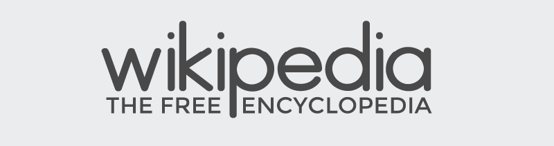
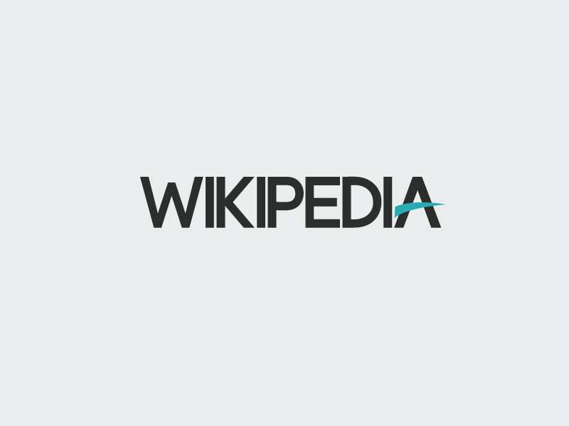

Wikipedia Redesign

So I started with custom glyphs and worked on 2 styles, one with capitals and one with lower case. I decided to move to less of a serif look for the font and more of a san-serif typeface.

Here I combined the two types of logos I had in the previous shot to form this one.

I soon found that the problem with the previous logo is that it is very much different from the current Wikipedia logo and so would not be a good transition. Instead I used the first concept I drew and worked through that to produce the above shot.